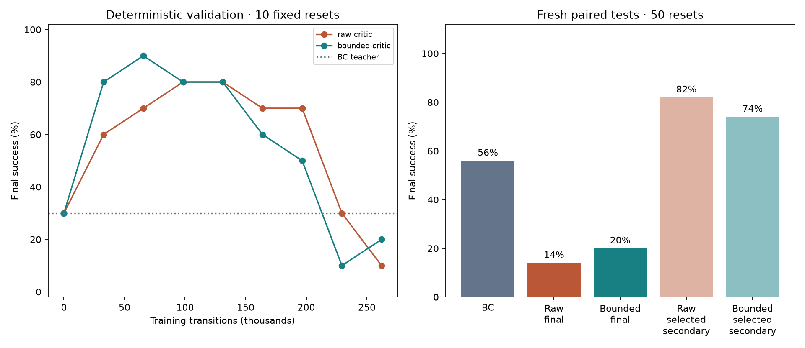
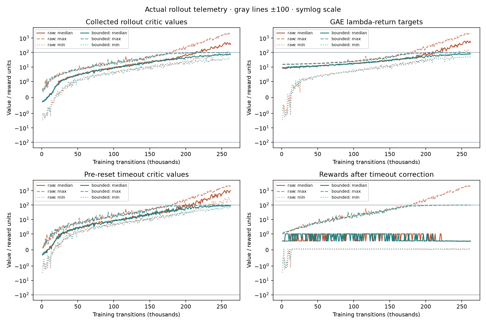
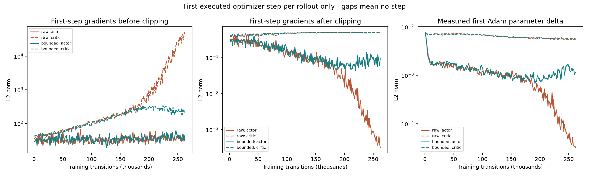

Stage 1 · paired critic-output ablation · original task
Does bounding the critic stabilize BC-initialized PPO?
Fixed-budget final successes: bounded 10/50; raw 7/50; BC teacher 28/50. The final models receive the same 262,144 transitions. Validation-selected models below are secondary.
One training seed (42) per arm and a short diagnostic budget. These results cannot establish million-transition stability or performance across training seeds. Fifty paired test resets evaluate these particular policies. No stopping override, hybrid recovery, reward change or timeout-semantics change is used.
Only the critic output changes: V = 100 tanh(raw V / 100). Both arms start with the same copied BC actor, canonical critic tensors, fixed observation normalization, parent RNG digest and empty Adam state. Initial teacher/raw/bounded full validation episodes match exactly. Initial value outputs need not match: the output transform is the treatment. All runs preserve the 50-step horizon and final success requires actual 3D cube–goal distance ≤ 2.5 cm and all seven arm speeds ≤ 0.2 rad/s.

What the critic sees and bootstraps
These are actual collected rollout values, GAE lambda-return targets, pre-reset terminal critic values, and rewards after timeout correction. Lines show medians, maxima and minima. Gray reference lines mark ±100; axes use a symmetric logarithmic scale. The installed normalized task reward is in [0,1], so the true continuing discounted value with gamma 0.99 is in [0,100]. The candidate permits values in [−100,100]; it clips neither rewards nor targets. Negative or large timeout-corrected rewards are not raw environment rewards.

Actual gradients and Adam steps
Each point measures only the first executed optimizer step of that rollout, rather than all minibatches or the whole update. Hooks observe gradients before shared global clipping, gradients at Adam entry, and actual parameter deltas after that Adam step. Actor and critic curves are separate. Gaps mean no optimizer step. A smaller clipped gradient alone does not prove a smaller Adam update; momentum and adaptation matter.

Stochastic training counts
These counts exclude validation and tests. Steps are correlated; unfinished episodes at the final rollout boundary are excluded from completed-episode counts. A placed or successful state alone does not establish a learned pick.
Native paired rollouts
The first two predeclared test seeds are shown regardless of outcome. All stored non-trajectory episode fields match the corresponding full test episodes, and all six video files have saved SHA-256 hashes.
Predeclared seed 190000
BC teacherRaw critic · finalBounded critic · finalPredeclared seed 190001
BC teacherRaw critic · finalBounded critic · final
Selection and limits
Reset-stream caveat: initial worker resets are seeded, but later automatic resets draw on worker Torch RNG that this historical factory did not seed. Parent fingerprints do not cover worker states; first-rollout summaries differ. These are matched initialization and recipe comparisons, not identical training trajectories. The subsequent worker-seeding repair is for future runs and does not relabel this evidence.
Selected checkpoints: raw: 98,304 transitions; bounded: 65,536 transitions. Ranking uses final success, then any-step success, then return. Selection is secondary and uses ten fixed validation resets. Validation executes before the optimizer update at that boundary; fixed-budget final models include the last update. Step-zero selections represent the initial BC actor, not PPO improvement.
The historical audit uses 408 fixed off-policy demonstration states to inspect earlier checkpoints. It establishes critic miscalibration on those probes; it does not recover historical on-policy gradients or prove the cause of instability. Saved Adam buffers are momentum statistics. This experiment adds actual on-policy telemetry to test a single stabilization hypothesis.
Evidence
protocol.json · preflight.json · provenance.json · verified.json · audit.json · geometry.json · comparison.json · video_manifest.json · training_totals.json · raw_diagnostics.json · bounded_diagnostics.json · raw_training_metrics.json · bounded_training_metrics.json · raw_initialization.json · bounded_initialization.json
Episode evidence is exported as compact JSONL for all three preflight policies, all five test conditions and the native video episodes. Archived launch sources are checksum-verified against the protocol.